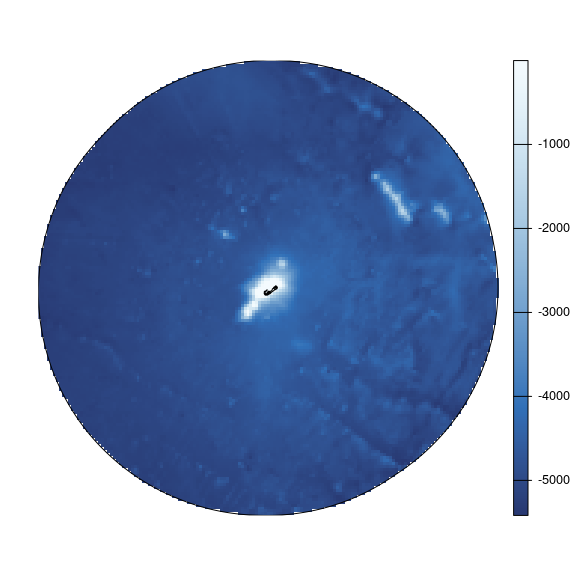
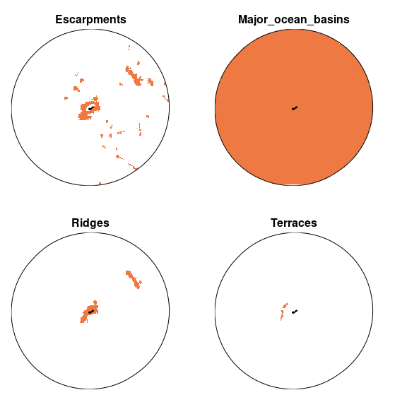
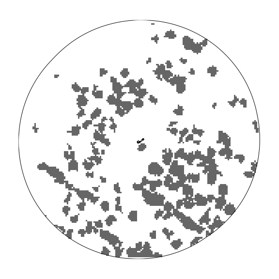
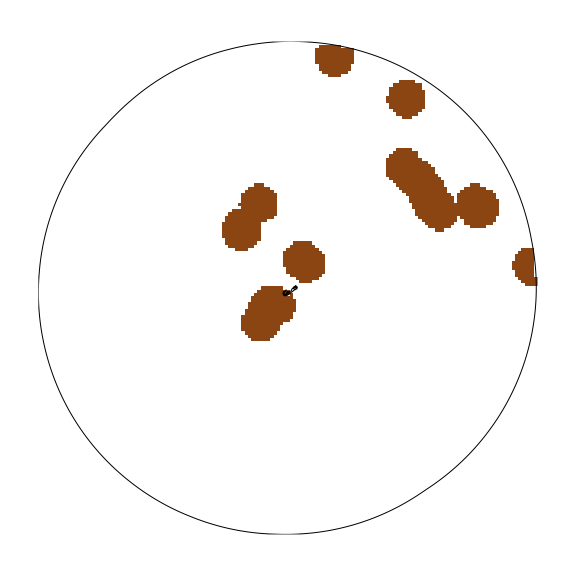
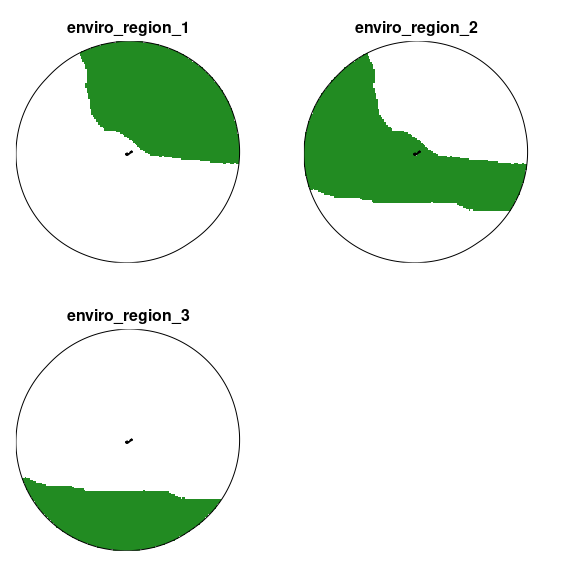

oceandatr aims to provide simple functions for creating data for conducting a spatial conservation prioritization for large scale areas of the ocean, specifically offshore areas.
Installation
You can install oceandatr from GitHub with:
if (!require(remotes)) install.packages("remotes")
#might need to increase timeout as it is a large package
options(timeout = 9999)
remotes::install_github("emlab-ucsb/oceandatr")Example of usage
Obtain an EEZ for an area of interest
This function pulls data for EEZs from the Marine Gazetteer using the mregions2 R package; the function is just a wrapper to make the process a bit simpler.
bermuda_eez <- get_area(area_name = "Bermuda", mregions_column = "territory1")
#plot to check we have Bermuda's EEZ
plot(bermuda_eez[1], col = "lightblue", main=NULL, axes=TRUE)
Choose a CRS
Best practice is to use a local, equal area projection for all geospatial data for use in the prioritization. Finding a suitable projection can be tricky, but projection wizard provides a handy tool. Standard projections used for countries can also be found at https://epsg.io/ by searching with country name.
The bounding box coordinates for the area of interest can be used to generate the coordinate reference system (CRS) on projection wizard
sf::st_bbox(bermuda_eez)
#> xmin ymin xmax ymax
#> -68.91706 28.90577 -60.70480 35.80855The coordinates above should be entered as the ‘Geographic extent’ and the map should then have a box drawn around the bounding box of the area of interest. The projection can then be copied and pasted from the pop-up box when clicking on ‘WKT’ or ‘PROJ’. For brevity, we are using the PROJ string, but WKT is now generally preferred. The projection needs to be placed in quotation marks as follows:
projection_bermuda <- '+proj=laea +lon_0=-64.8108333 +lat_0=32.3571917 +datum=WGS84 +units=m +no_defs'Get a planning grid for the area of interest
A planning grid is needed for spatial prioritization. This divides the area of interest into grid cells. The get_grid function will return a planning grid for the specified area of interest (polygon), projected into the coordinate reference system specified, at the cell resolution specified in kilometres.
planning_grid <- get_grid(area_polygon = bermuda_eez, projection_crs = projection_bermuda, resolution = 5000)
#project the eez into same projection as planning grid for plotting
bermuda_eez_projected <- bermuda_eez %>%
sf::st_transform(crs = projection_bermuda) %>%
sf::st_geometry()
#plot the planning grid
terra::plot(planning_grid, col = "gold3", axes = FALSE, legend = FALSE)
plot(bermuda_eez_projected, add=TRUE)
The raster covers Bermuda’s EEZ. The grid cells would be too small to see if we plotted them, but here is a coarser grid (lower resolution) visualized so we can see what the grid cells look like.
planning_grid_coarse <- get_grid(area_polygon = bermuda_eez, projection_crs = projection_bermuda, resolution = 20000)
plot(bermuda_eez_projected, axes = FALSE)
terra::plot(terra::as.polygons(planning_grid_coarse, dissolve = FALSE), add=TRUE)
Get bathymetry
Now we have our planning grid, we can get data for this area of interest. A key piece of data is bathymetry. If the user has downloaded data for the area of interest from the GEBCO website, they can pass the file path to this function and it will crop and rasterize the data using the supplied planning grid. If no file path is provided, the function will extract bathymetry data for the area from the ETOPO 2022 Global Relief model using a function borrowed from the marmap package.
bathymetry <- get_bathymetry(spatial_grid = planning_grid, classify_bathymetry = FALSE)
#> This may take seconds to minutes, depending on grid size
terra::plot(bathymetry, col = hcl.colors(n=255, "Blues"), axes = FALSE)
plot(bermuda_eez_projected, add=TRUE)
Depth classification
The ocean can be classified into 5 depth zones:
- 0 - 200m: Epipelagic zone
- 200 - 1000m: Mesopelagic zone
- 1000 - 4000m: Bathypelagic zone
- 4000 - 6000m: Abyssopelagic zone
- 6000m+: Hadopelagic zone
We can get the depth zones for Bermuda simply by setting the classify_bathymetry argument in get_bathymetry to TRUE.
depth_zones <- get_bathymetry(spatial_grid = planning_grid, classify_bathymetry = TRUE)
#> This may take seconds to minutes, depending on grid size
terra::plot(depth_zones, col = "navyblue", axes = FALSE, legend = FALSE, fun = function(){terra::lines(terra::vect(bermuda_eez_projected))})
Get geomorphological data
The seafloor has its own mountains, plains and other geomorphological features just as on land. These data come from Harris et al. 2014, Geomorphology of the Oceans and are available for download from https://www.bluehabitats.org. The features that are suggested as major habitats for inclusion in no-take MPAs by Ceccarelli et al. 2021 are included in this package, so it is not necessary to download them.
geomorphology <- get_geomorphology(spatial_grid = planning_grid)
terra::plot(geomorphology, col = "sienna2", axes = FALSE, legend = FALSE, fun = function(){terra::lines(terra::vect(bermuda_eez_projected))})
Get knolls data
Knolls are another geomorphological feature, which are ‘small’ seamounts, classified as seamounts between 200 and 1000m higher than the surrounding seafloor Morato et al. 2008. Data are the knoll base area data from Yesson et al. 2011.
knolls <- get_knolls(spatial_grid = planning_grid)
terra::plot(knolls, col = "grey40", axes = FALSE, legend = FALSE)
plot(bermuda_eez_projected, add=TRUE)
Get seamount areas
Seamounts, classified as peaks at least 1000m higher than the surrounding seafloor Morato et al. 2008. These data are from Yesson et al. 2021. Each peak is buffered to the distance specified in the function call. The units of the buffer are in the same units as the area polygon or planning grid, which can be checked using, e.g. sf::st_crs(planning_grid, parameters = TRUE)$units_gdal
#planning grid units are metres, so set buffer to 30000 m = 30 km
seamounts <- get_seamounts_buffered(spatial_grid = planning_grid, buffer = 30000)
terra::plot(seamounts, col = "saddlebrown", axes = FALSE, legend = FALSE)
plot(bermuda_eez_projected, add=TRUE)
Habitat suitability models
Retrieve habitat suitability data for 3 deep water coral groups:
- Antipatharia: Habitats associated with increased biodiversity in both invertebrate and vertebrate species; global distributions were modeled by Yesson et al. (2017)
- Cold water coral: Important habitats and nursery areas for many species; global distributions were modeled by Davies and Guinotte (2011)
- Octocoral: Important habitats for invertebrates, groundfish, rockfish and other species; global distributions were modeled by Yesson et al. (2012)
coral_habitat <- get_coral_habitat(spatial_grid = planning_grid)
#show the seamounts areas on the plot: coral habitat is often on seamounts which are shallower than surrounding ocean floor
plot_add <- function(){
terra::lines(terra::vect(bermuda_eez_projected), col = "grey40")
terra::lines(terra::as.polygons(seamounts, dissolve = TRUE), col = "orangered4")
}
terra::plot(coral_habitat, col = "coral", axes = FALSE, fun = plot_add)
Environmental Regions
Bioregions are often included in spatial planning, but available bioregional classifications are either too coarse or too detailed to be useful for planning at the EEZ level. Borrowing methods from Magris et al. 2020
#cluster the data
#set number of clusters to 3 to reduce runtime and memory usage
enviro_regions <- get_enviro_regions(spatial_grid = planning_grid, num_clusters = 3)

#plot
terra::plot(enviro_regions, col = "forestgreen", axes = FALSE, legend =FALSE, fun = function(){terra::lines(terra::vect(bermuda_eez_projected))})